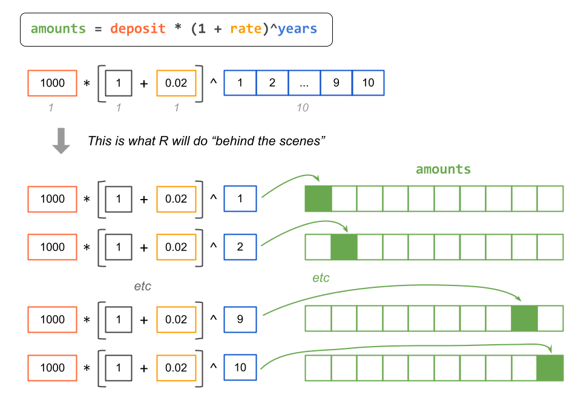

6 More Vectors
In the previous chapter we started the topic of data objects by introducing vectors and some of its basics concepts. In this chapter we continue the discussion of vectors, especifically the notions of vectorization, and recycling.
6.1 Motivation: Future Value
Let’s calculate saved amount for a 10 year period
How much in ten years?
# inputs
deposit <- 1000
rate <- 0.02
# amounts at the end of years 1, 2, 3, ..., 10
amount1 = deposit * (1 + rate)
amount2 = amount1 * (1 + rate)
amount3 = amount2 * (1 + rate)
amount4 = amount3 * (1 + rate)
amount5 = amount4 * (1 + rate)
amount6 = amount5 * (1 + rate)
amount7 = amount6 * (1 + rate)
amount8 = amount7 * (1 + rate)
amount9 = amount8 * (1 + rate)
amount10 = amount8 * (1 + rate)This is too repetitive, time consuming, boring, and error prone (can you spot the error?)
Let’s do a bit of algebra.
6.2 Future Value
In one year you’ll have:
\[ 1000 \times (1.02) = 1020 \]
In two years you’ll have:
\[ 1000 \times (1.02) \times (1.02) = 1000 \times (1.02)^2 = 1040.4 \]
In three years you’ll have:
\[ 1000 \times (1.02) \times (1.02) \times (1.02) = 1000 \times (1.02)^3 = 1061.208 \]
Do you see a pattern?
If you deposit $1,000 at a rate of return \(r\), how much will you have at the end of year \(t\)? The answer is given by the Future Value formula. In its simplest version, the formula is:
\[ \text{FV} = \text{PV} \times (1 + r)^t \]
\(\text{FV}\) = future value (how much you’ll have)
\(\text{PV}\) = present value (the initial deposit)
\(r\) = rate of return (e.g. annual rate of return)
\(t\) = number of periods (e.g. number of years)
Keep in mind that there are more sophisticated versions of the FV formula. For now, let’s keep things simple and use the above equation.
If you deposit $1,000 at a rate of 2%, how much will you have at the end of year 10?
6.3 Vectorization
At the end of each year you will have:
deposit <- 1000
rate <- 0.02
years <- 1:10
# example of vectorization (or vectorized code)
amounts <- deposit * (1 + rate)^years
amounts
#> [1] 1020.000 1040.400 1061.208 1082.432 1104.081 1126.162 1148.686 1171.659
#> [9] 1195.093 1218.994Notice the use of : (“colon”) to generate a numeric sequence vector.
The code in the previous slide to obtain amounts is an example of one of the
most fundamental and powerful kinds of operations (computations) in R, and it
has its special name: vectorization
When you write code like this:
we say that your code is vectorized
Simply put, vectorization means that a given function or operation will be applied to all the elements of one or more vectors, element by element.
Say you want to create a vector log_amounts by taking the logarithm of
amounts:
When you create the vector log_amounts, what you’re doing is applying a
function to a vector, which in turn acts on all elements of the vector.
This is called Vectorization in R parlance. Most functions that operate with vectors in R are vectorized functions. This means that an action is applied to all elements of the vector without the need to explicitly type commands to traverse all the elements.
In many other programming languages, you would have to use a set of commands to loop over each element of a vector (or list of numbers) to transform them. But not in R.
Another example of vectorization would be the calculation of the square root of all the amounts:
Why should you care about vectorization?
If you are new to programming, learning about R’s vectorization will be very natural and you won’t stop to think about it too much. If you have some previous programming experience in other languages (e.g. C, python, perl), you know that vectorization does not tend to be a native thing.
Vectorization is essential in R. It saves you from typing many lines of code, and you will exploit vectorization with other useful functions known as the apply family functions (we’ll talk about them later in the book).
6.4 Recycling
Closely related with the concept of vectorization we have the notion of Recycling. To explain recycling let’s see an example.
The values in the vector aomunts are given in dollars, but what if you need
to convert them into values expressed in thousands of dollars?. To convert
from dollars to thousands-of-dollars you just need to divide by 1000; for
example
- 1,000 dollars becomes 1 thousands-dollars
- 10,000 dollars becomes 10 thousands-dollars
- 1 dollar becomes 0.001 thousands-dollars
Here is how to create a new vector thousands:
thousands <- amounts / 1000
thousands
#> [1] 1.020000 1.040400 1.061208 1.082432 1.104081 1.126162 1.148686 1.171659
#> [9] 1.195093 1.218994What you just did (assuming that you did things correctly) is called Recycling, which what R does when you operate with two (or more) vectors of different length.
To understand this concept, you need to remember that R does not have a data structure for scalars (single numbers). Scalars are in reality vectors of length 1.
The conversion from dollars to thousands-of-dollars requires this operation:
amounts / 1000. Although it may not be obvious, we are operating with two
vectors of different length: amounts has 10 elements, whereas 1000 is a
one-element vector. So how does R know what to do in this case?
Well, R uses the recycling rule, which takes the shorter vector (in this
case 1000) and recycles its elements to form a temporary vector that matches
the length of the longer vector (i.e. amounts).
Another recycling example
Here’s another example of recycling. Saved amounts of elements in an odd number position will be divided by two; values of elements in an even number position will be divided by 10:
units <- c(1/2, 1/10)
new_amounts <- amounts * units
new_amounts
#> [1] 510.0000 104.0400 530.6040 108.2432 552.0404 112.6162 574.3428 117.1659
#> [9] 597.5463 121.8994The elements of units are recycled (i.e. repeated) as many times as the
number of elements in amounts. The previous command is equivalent to this:
6.4.1 Vectorization and Recycling
Let’s bring back our vectorization example
Recall that deposit and rate have length 1. So does the number 1, it is
a vector containing just one element. Vector years has 10 elements.
In pictures, we have the following diagram

Figure 6.1: Diagram depicting vectors of different lengths.
How does R take care of this?
The following diagram depicts what R does behind the scenes: R recycles the
shorter vectors to match the length of the longest vector. In this example,
vectors deposit, rate, and 1 are the shorter vectors, which are then
recycle to match the length of the longest vector years. The computation
process is completed with vectorization.
